Welcher Stadtteil passt zu mir?

So soll mein Stadtteil sein
Ländlich vs. Stadtisch
Ländlich
Städtisch
Monochrom vs. Bunt
Monochrom
Bunt
Nationalbewusst vs. Alternativ
Nationalbewusst
Alternativ
Das ist mir wichtig
Familie
Selbstverwirklichung
ÖPNV Verfügbarkeit